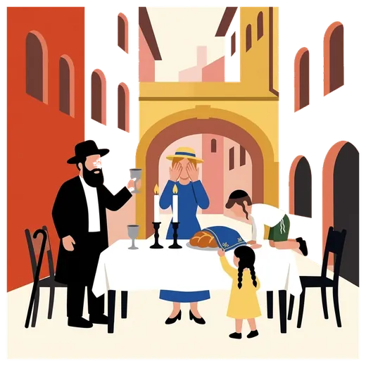

Guided tour of Jewish Lyon
A Jewish guide leads the visit in English, French or Spanish, with the inside of the Grande Synagogue. Sunday to Friday midday.
See the detailsBook on WhatsApp mishpacha tours
mishpacha tours
Resorts
Les Deux AlpesCourchevelVal ThorensMegèveAlpe d'HuezVal d'IsèreLes ArcsLa PlagneChamonixAnnecyGrenobleZermattSt. MoritzCrans-MontanaCerviniaCourmayeurCortina d'AmpezzoHome / Jewish Lyon guide / Shabbat in Lyon
You can keep Shabbat well in Lyon if you plan it before you land. The Grande Synagogue and Neveh Chalom hold services, Chabad houses host on request, and kosher caterers cook for the weekend. Settle three things before you arrive: where you sleep, who feeds you, and how you carry.

This week
Shabbat
in Lyon

Candle lighting falls as early as 16:30 in December and after 21:00 in June.
 You do not have to spend Shabbat in a hotel room. Send us your dates and how many you are, and we put you in touch with a Chabad family in Lyon or Villeurbanne for the Friday night meal and the Shabbat lunch. This is Chabad hospitality: no charge, and a donation to the house is customary.
You do not have to spend Shabbat in a hotel room. Send us your dates and how many you are, and we put you in touch with a Chabad family in Lyon or Villeurbanne for the Friday night meal and the Shabbat lunch. This is Chabad hospitality: no charge, and a donation to the house is customary.
If you would rather have a Shabbat organised for your group alone, with the meals, the walk to the synagogue and the candle-lighting times taken care of, we arrange it on quote.
 Where you sleep. Choose a hotel you can reach on foot from a synagogue. Walking estimates and the questions to ask are on our page where to stay in Lyon.
Where you sleep. Choose a hotel you can reach on foot from a synagogue. Walking estimates and the questions to ask are on our page where to stay in Lyon. Where you pray. Pick the synagogue before you pick the hotel. Details below.
Where you pray. Pick the synagogue before you pick the hotel. Details below. Who feeds you. Order before Thursday. Our page on kosher catering and Shabbat meals explains how.How you arrive. Land and settle in before candle lighting. Once Shabbat starts, the metro and taxis are off the table. See the travel FAQ.
Who feeds you. Order before Thursday. Our page on kosher catering and Shabbat meals explains how.How you arrive. Land and settle in before candle lighting. Once Shabbat starts, the metro and taxis are off the table. See the travel FAQ.French authorities keep security forces visible around Jewish sites, so expect a check at the entrance of a synagogue. Bring a photo ID and arrive a few minutes early. More on the synagogues of Lyon page.
 Shabbat meals
Shabbat mealsPlan your Shabbat meals before you arrive.
Caterers. Seven caterers are certified by the Beth Din de Lyon. We help you choose and write. See kosher catering in Lyon. Chabad. A Chabad house can host you for a meal. Call before Friday noon and say how many you are. See Chabad in Lyon.Apartment Shabbat. Two groceries certified by the Beth Din, Hypercacher and Lilly Market, sell what you need. Buy on Thursday: shops close on Friday afternoon.
Chabad. A Chabad house can host you for a meal. Call before Friday noon and say how many you are. See Chabad in Lyon.Apartment Shabbat. Two groceries certified by the Beth Din, Hypercacher and Lilly Market, sell what you need. Buy on Thursday: shops close on Friday afternoon.Walk to prayer, walk to your meal, walk back. The Presqu'île, around Bellecour, puts you about ten minutes from the Grande Synagogue. The 6th arrondissement is the neighbourhood of most kosher restaurants on the Lyon side, about thirty-five minutes from Tilsitt on foot. Villeurbanne is the centre of community life, far from the old town. Our page where to stay in Lyon gives the estimates, the map and the questions to put to a hotel about keys, floors and doors.
 Every kosher restaurant, bakery, butcher and grocery on the Beth Din list closes for Shabbat on Friday afternoon. Assume early, and shop on Thursday or Friday morning. Call before you plan a Saturday night dinner.
Every kosher restaurant, bakery, butcher and grocery on the Beth Din list closes for Shabbat on Friday afternoon. Assume early, and shop on Thursday or Friday morning. Call before you plan a Saturday night dinner.
The Jewish cemetery follows the same rhythm: open until 16:00 on Friday, closed on Saturday (see the cemetery page).
 If you rely on an eruv at home, ask the synagogue or your host before you carry anything outdoors on Shabbat.
If you rely on an eruv at home, ask the synagogue or your host before you carry anything outdoors on Shabbat.
 Lyon has several mikvahs. Mikvah Haya Mouchka, 60 rue Crillon (6th arrondissement), is listed as open nightly. Addresses, phones and how to ask are on our mikveh page. The Consistoire also looks after the community's mikvahs: Maison du Consistoire.
Lyon has several mikvahs. Mikvah Haya Mouchka, 60 rue Crillon (6th arrondissement), is listed as open nightly. Addresses, phones and how to ask are on our mikveh page. The Consistoire also looks after the community's mikvahs: Maison du Consistoire.
Shabbat ends at the Havdalah time shown in the box at the top of this page for Lyon. The Grande Synagogue holds Shacharit on Sunday at 8:00.
We never guide on Shabbat or on Jewish holidays. Your guide keeps Shabbat herself. A Sunday morning tour is possible, and so is a Friday morning tour that ends well before candle lighting. See the Jewish Lyon tour: 2 hours 30 minutes, private group, inside the Grande Synagogue.
The box at the top of this page shows candle lighting and Havdalah for this week. For your dates, write to us and we send the exact times.
Yes. The Grande Synagogue and Neveh Chalom hold services, and so do the Chabad houses and 25 neighbourhood minyanim. Tell us your hotel and we point you to the nearest one.
If you find one, tell us and we update this page. Meanwhile, choose a hotel within walking distance of a synagogue and order your meals in advance.
Ask the synagogue or your host before you carry.
Do not count on it. Write to a Chabad house or a caterer before Thursday.
Never. We guide from Sunday to Friday morning, and we do not run tours on Jewish holidays.
One request, we organise everything, from the table to the transfer.
A Jewish guide leads the visit in English, French or Spanish, with the inside of the Grande Synagogue. Sunday to Friday midday.
See the detailsBook on WhatsApp
Shabbat meals, meals delivered to your hotel, a minyan close by.
See the detailsBook on WhatsApp
A chef in your apartment or your chalet, in a kitchen made kosher.
See the detailsBook on WhatsAppLyon airport, Geneva, the Alpine resorts. Never during Shabbat.
See the detailsBook on WhatsApp
A quiet presence beside your group, only when you ask for it.
See the detailsBook on WhatsApp